妙法傳遞入校園
一群媽媽，怎樣走進別人孩子的教室？

先別急著下結論，讀完再說說你的想法～
這一篇講大愛媽媽：一群媽媽走進華小，用說故事的方式把靜思語帶給孩子。一開始學校不認識她們，有的還婉拒。
後來她們進了教室、設了好話箱；疫情來了不能進校，就開起「安心廚房」。
下面是原書的節錄，紅色底線是我們替你標出的轉折點。
讀之前：你覺得媽媽去學校說故事，最大的收穫是誰？
媽媽說好話故事
臺灣的愛心媽媽，帶動了吉隆坡的媽媽。閱讀引導
希望帶動各校的愛心媽媽，以說故事的方式將「靜思語」帶入校園……
2002年，證嚴上人正式命名為「大愛媽媽」。
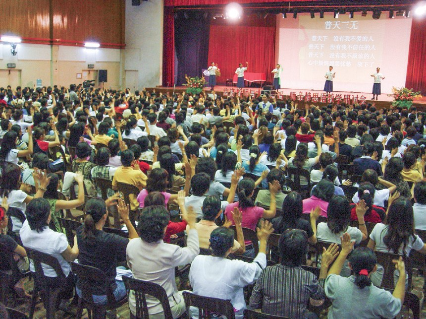
大愛媽媽帶動孩子們在生活中力行「口說好話，身行好事，心發好願」

還要孩子做到。
藉由家長們的凝聚與經驗分享，也增長自己的智慧。
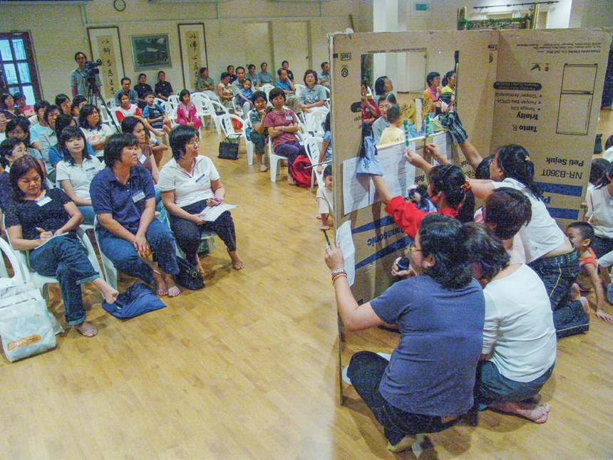
59位學員，希望透過講述、話劇等方式帶出靜思語故事，亦包含團康、手語教學、美勞、人文課程與生命故事分享等課程……
才去說故事！
第一間點頭的學校
一間一間去溝通，等學校說好。閱讀引導
奔走於吉隆坡和巴生兩地的華文小學，積極與各校溝通，爭取讓大愛媽媽走入校園為孩子們說故事的機會。
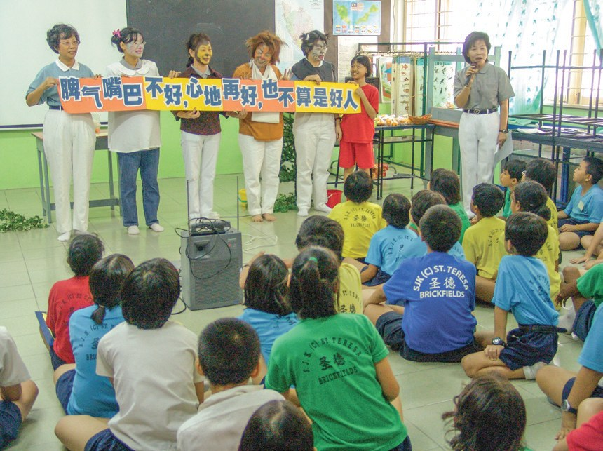
獲得吉隆坡十五碑聖德華小首肯，大愛媽媽首次進入校園分享靜思語故事。

終於點頭了！
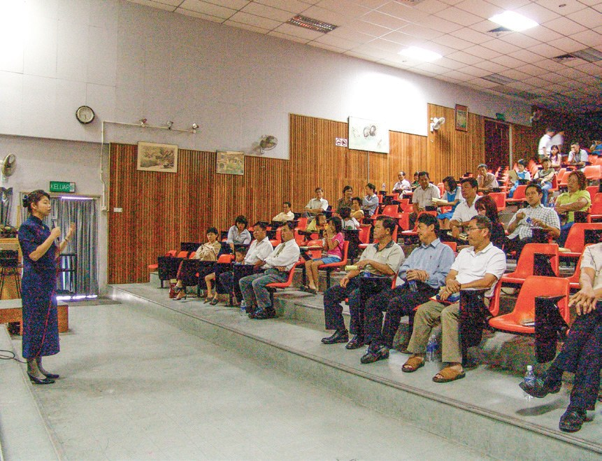
初期入校時，以學校禮堂、視聽室等場地，讓大愛媽媽與百名學生分享……
2007年起，大愛媽媽開始進入班級，採小班制，老師固定，志工較能夠做到接引與帶動。

改成一班一班講。
因此自2010年開始，調整為每月兩次，一直持續至2020年，因新冠病毒疫情爆發而暫停進入校園。
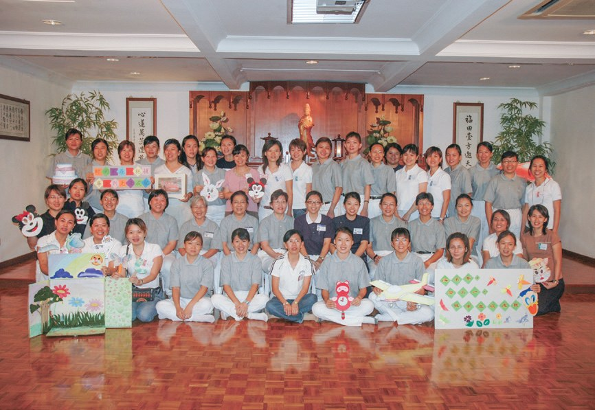
- 3,531人次參與大愛媽媽（至2022年）p.438
- 13所吉隆坡進入的學校（2019年）p.439
把好話投進箱子
好話、環保、奉茶，一堂課一個主題。閱讀引導
例如配合「禮節」主題，大愛媽媽就在每個班級推廣「好話箱」體驗，落實人人口說好話。
對象並不限制於班上的同學，老師、父母皆可，實踐如何讓美善循環。

寫給同學、老師、爸媽。
猜一猜閱讀引導
把蔬果、紙張、保麗龍、塑膠埋進盆栽，兩週後倒出泥土，學生看到什麼？
從2010年起每年11月，大愛媽媽配合學校畢業典禮，辦理感恩茶會……

向老師奉一杯茶。
當老師從旁觀者變成參與者後，更能直接地感受到慈濟的人文精神……
藉此因緣也接引了育才華小林碧云與林慧敏老師加入慈濟教聯會。
後來也加入了！
不能進校，就做便當
疫情來了，大愛媽媽換一種方式付出。閱讀引導
2020年3月，新冠病毒疫情爆發，大愛媽媽雖然無法入校服務，但仍不忘響應上人大哉教育的呼籲，集合力量來推素。
2020年9月9日，大愛媽媽啟動「安心廚房」，每週三準備素食便當給訂餐者。
但大愛媽媽能帶著自己的孩子們一起投入，發揮良能，格外有意義。
孩子一起幫忙。
- 64場次推素活動p.443
- 5,335人響應蔬食便當p.443
先從自己改變
兩位推手、一位校長、一位媽媽。閱讀引導
部分校方因慈濟是佛教團體，有所顧忌而婉拒，但她們還是持續堅持。
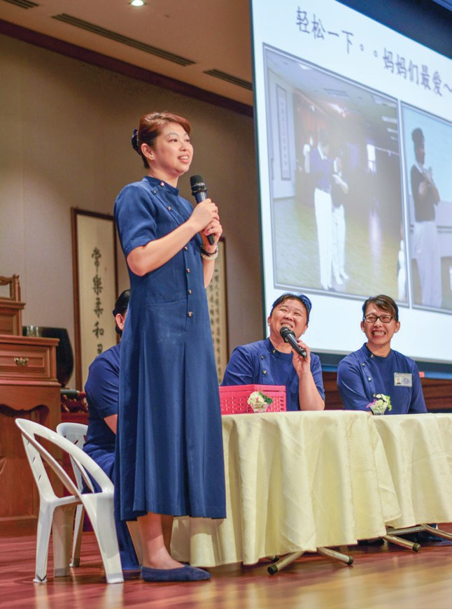
從2005年至2007年11月，林佳樺和馮桂瓊帶著這一群大愛媽媽，進入雪隆三十三所華小宣導。
三十三所華小！
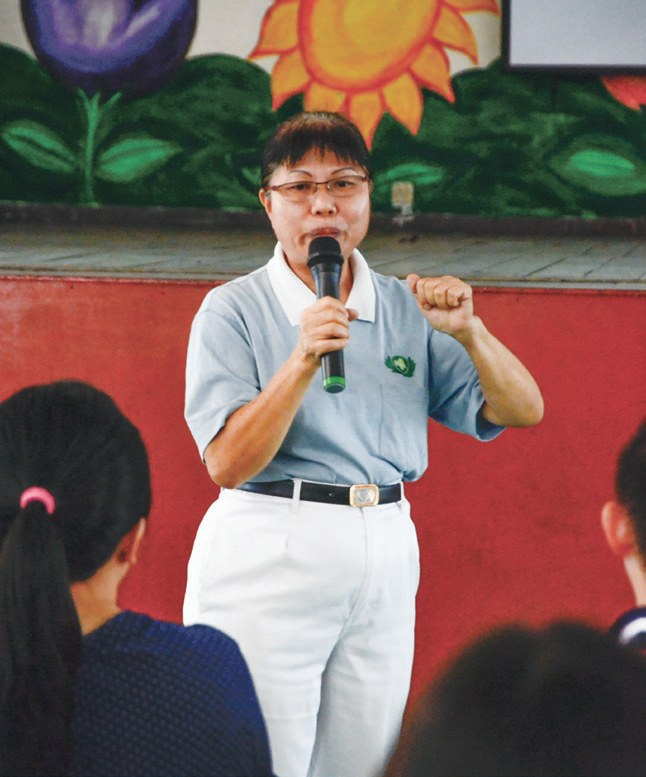
「……家長更需要教育。尤其是現代年輕的媽媽更應該加入大愛媽媽，大家不只是學習與孩子的互動技巧，更重要的是聆聽孩子的心聲。」
馮桂瓊說・p.444安新華小校長謝惠英的母親在2009年時驟然離世，生命的無常令她手足無措。
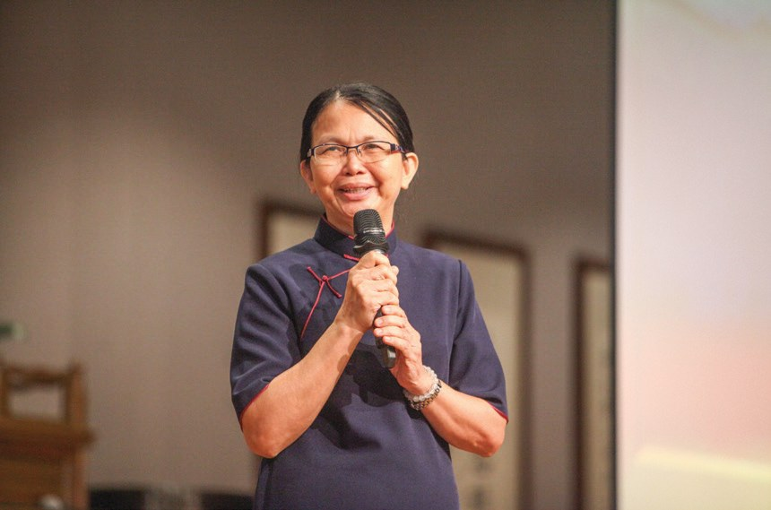
靜思語讓她成功學會轉念，能以自信心、勇氣化解不必要的爭執，也不再計較他人無心的話語。
「只要全校老師可以共同一心，將靜思語教學落實在校園，就能引領學生走向光明的未來。」
謝惠英說・p.445當大愛媽媽？
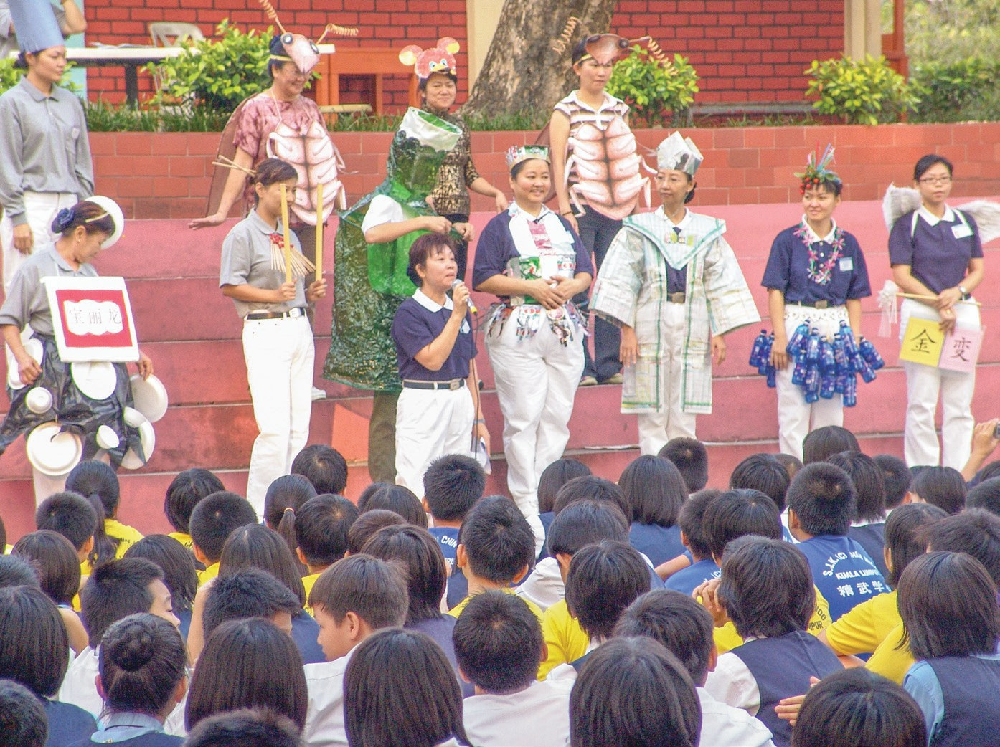
陳素虹漸漸把課程所學運用在與孩子的溝通上，讓原本性格浮躁的孩子也能靜下心來……
「我應該先從自己開始改變起。」
陳素虹說・p.447是因為媽媽先改變。
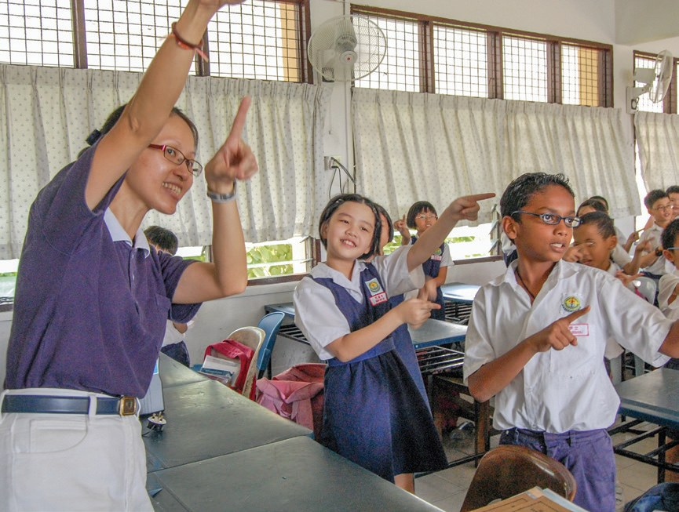
而媽媽們亦能化小愛為大愛，以『媽媽心』為孩子撒下愛的種子……
上人期勉・p.448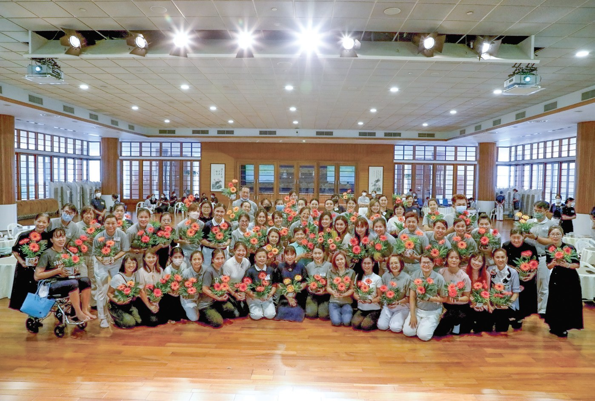
停一停：誰讓你記住了？閱讀引導
選一位你印象最深的人。沒有標準答案。
有人走了三十三所學校，有人失去母親後學會轉念，有人先改變自己。哪一位讓你最有感覺？

一起回頭看看吧～
回望
依本章原文整理，每一條都標了原書頁碼。閱讀引導
背後原因
為什麼要大愛媽媽

小川學校已經有老師，為什麼還要媽媽去說故事？
- 愛心媽媽
以說故事的方式將「靜思語」帶入校園。p.435
- 媽媽也成長
藉由家長們的凝聚與經驗分享，也增長自己的智慧。p.436
- 走進教室
2007年起開始進入班級，採小班制。p.437
後續發展
大愛媽媽一路走來

小禾從臺灣的培訓班到安心廚房，經過了多少年？
- 1998
臺灣「社區媽媽好話說故事」培訓班。p.435
- 2002
上人正式命名「大愛媽媽」。p.435
- 2005.3.5
吉隆坡首屆成長班開課，59位學員。p.436
- 2005.10.8
首次進入聖德華小說故事。p.436–437
- 2010
每月入班兩次，辦感恩茶會。p.437、440
- 2020.9.9
啟動「安心廚房」。p.442
美善循環
一個故事影響了誰
小禾大愛媽媽說的故事，後來影響了誰？
- 第一圈孩子
好話箱讓老師更瞭解學生。p.440
- 第二圈老師
兩位老師加入慈濟教聯會。p.441
- 第三圈媽媽自己
陳素虹先從自己開始改變。p.447
以上只整理本章寫到的事；書裡沒寫到的，我們不替它下結論。
回頭看讀前的選擇閱讀引導
同學之間的互動更頻密（p.440）；老師林碧云、林慧敏加入了教聯會（p.441）；陳素虹說要先從自己開始改變（p.447）。孩子、老師、媽媽自己，三方都收穫了。
大愛媽媽為什麼選了做便當？
只有你自己看得到喔！
準備好了就一起出發～